This is lab, we will be collecting acceleration data from IMU in XIAO nrf board for specific action, then use the data we collected to train a machine learning model to predict the action we perform.
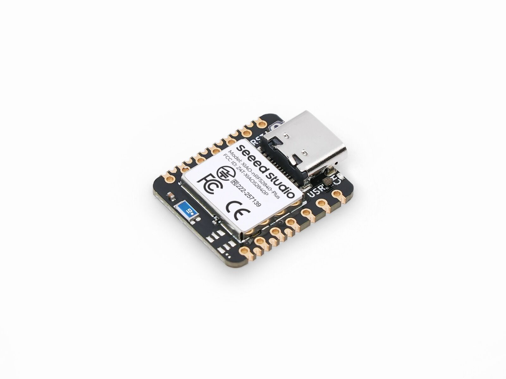
As a start, we will only be collecting 2 action: punch and flex.
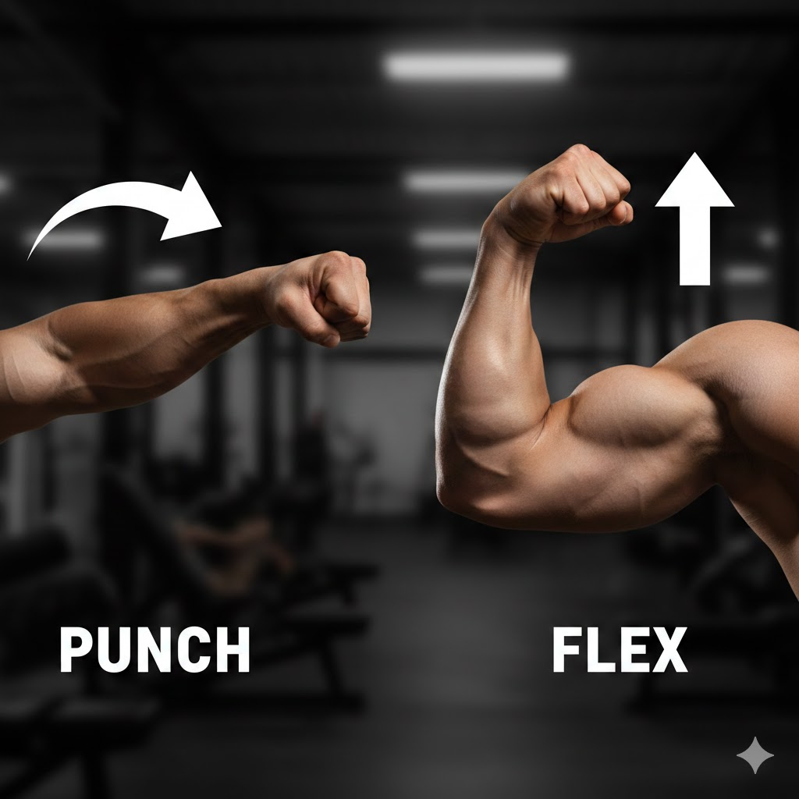
We start by first program the XIAO nrf board to bluetooth forcasting mode to keep collect the IMU data, then use a python script to capture the IMU information. We will collect it twice to get both actions, and each action, we will perform the action 10 times.
We will save those actions into 2 .csv file.
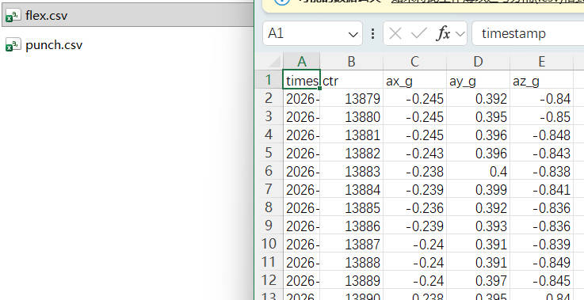
We can visualize those data's behavior below.
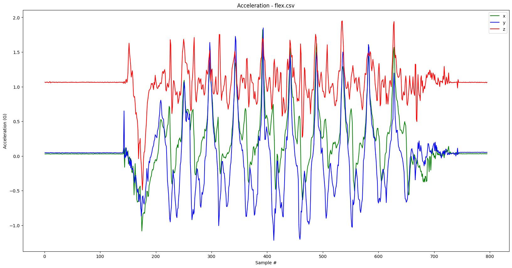
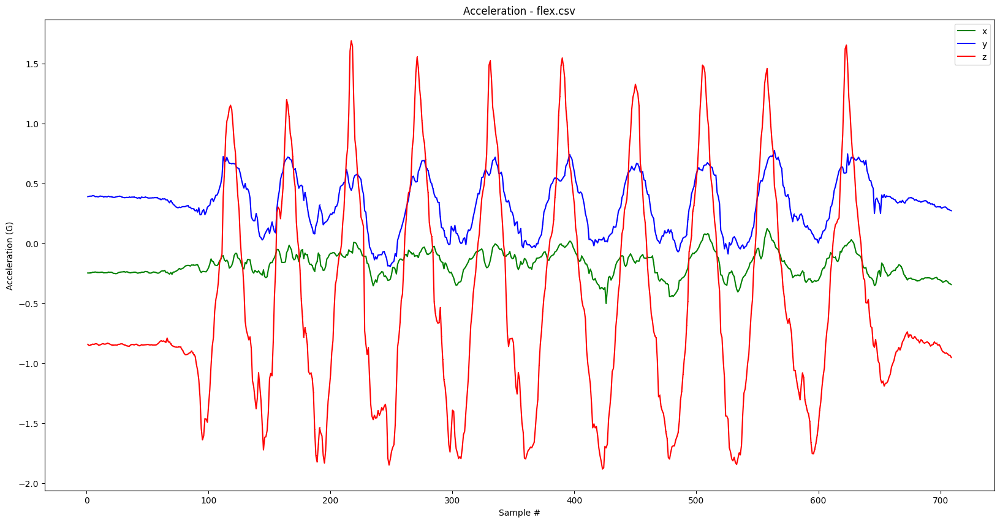
With those action data, we can train a very simple multi-layer neural network. We will have input layer - 20 hidden neurons - 10 hidden neurons - output layer. The training loss curve are show below.
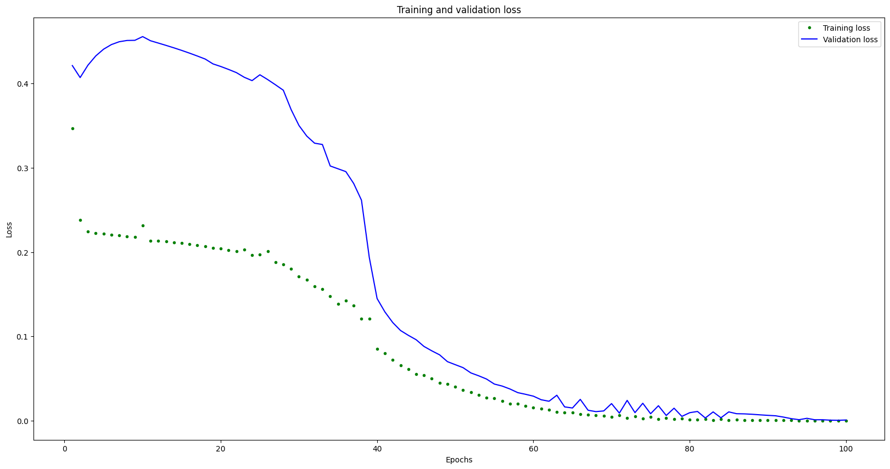
We will export the training result as a header file called: model.h. We can import this header file to IMU_classifier example code provided by the LSM6DS3 library for action inference. below are some result. I noticed that for punch, it is usually very accurately detected, but for flex, the accuracy is very low. The result might be due to the limited dataset (10) I have. The first box is the punch confidence level, and second box is flex confidence level.
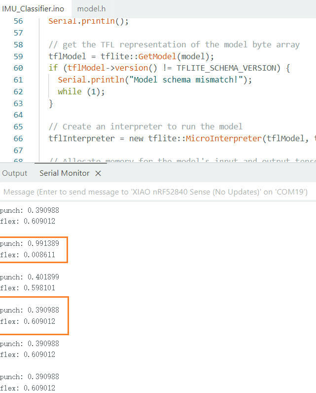
This is just the first phase of this lab, next week, we will add more on top of what we currently have to include more actions.
In the following week, we continue to extend the expperiment on 5 actions. they are: go down stairs, sitting, standing, go up stairs, and walking. As show below, the data collected visualization
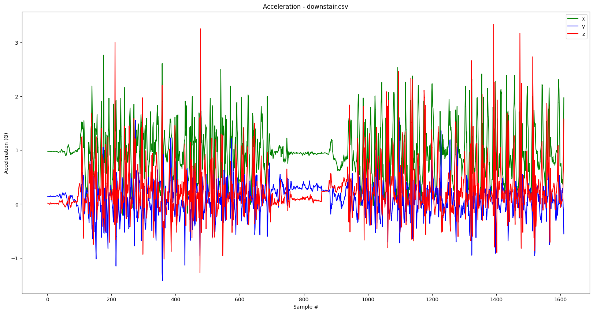
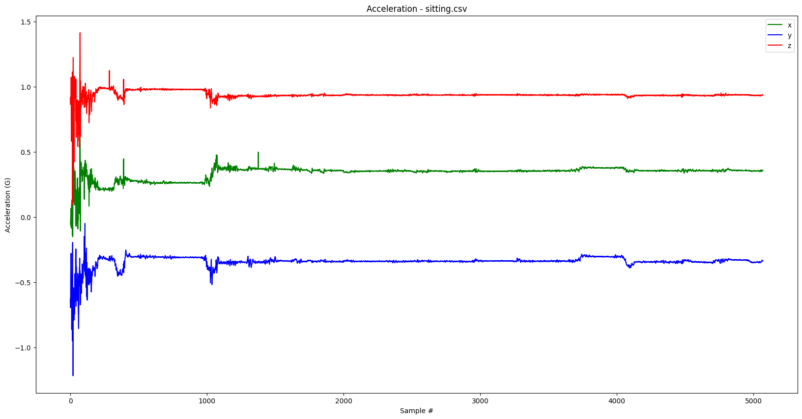
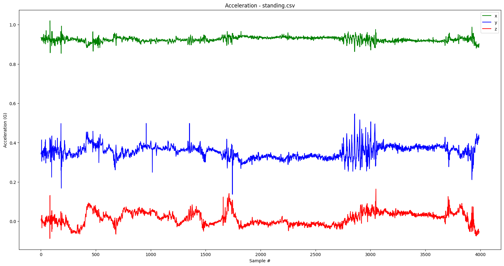
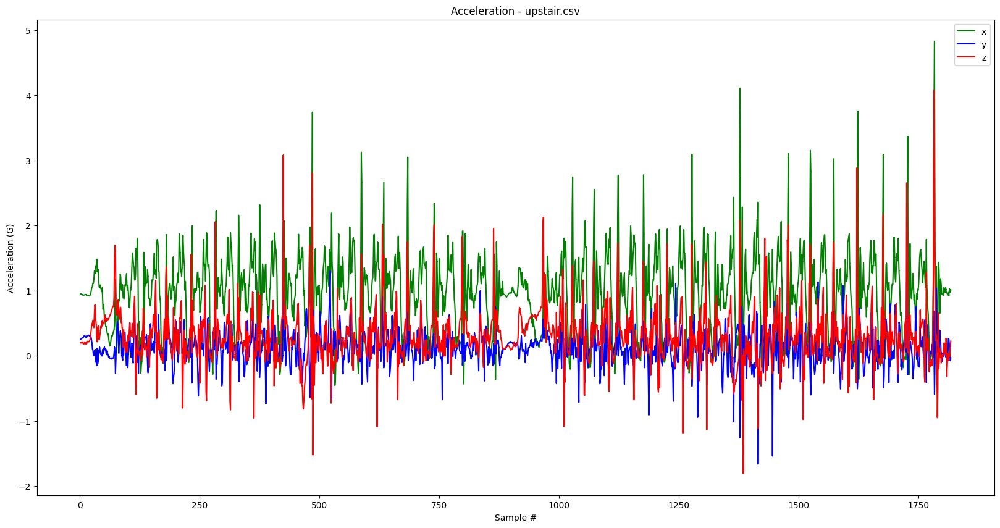
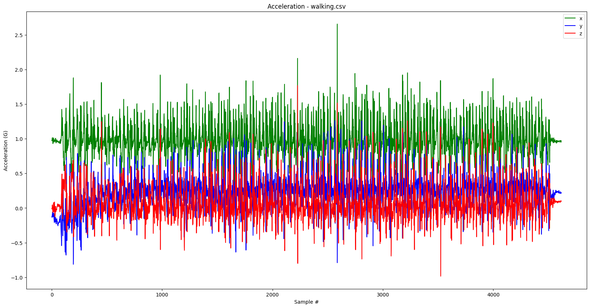
As well as their prediction result as below.
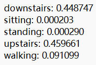
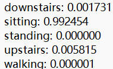
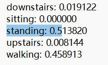
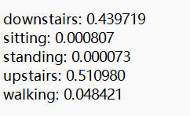
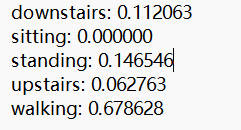
It can be see that for walking and standing, they are very easy to be confused with up stair and down stair due to their similarity. The result for walking and standing are blured because other action typically involves part of walking or standing. For sitting, the cofidence level is very high because it is the one action that have clearly different compare to others. For up and down stairs, it is also kind of not perfect due to the similarity among other actions.
← Back to homepage